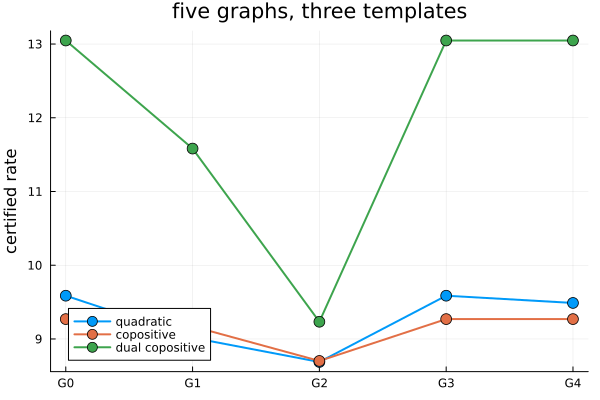

Comparing graphs: five graphs, three templates
Two path-complete graphs and one template: is a certificate on the first guaranteed to give one on the second, whatever the system? That is the ordering of (Debauche et al., 2022), and its answer depends on what the template is closed under. This example decides it on the five graphs of (Debauche et al., 2023) with compare, prints the simulations that justify each answer, and compares them with certified rates.
import PathCompleteCertificates as PCC
import Clarabel
using HybridSystems
using Plots
const OPTIMIZER = Clarabel.OptimizerClarabel.MOIwrapper.OptimizerFive graphs on two modes
A certificate graph is a GraphAutomaton with a mode on every edge. The paper names the nodes a to e, and so does everything printed below.
function graph(edges, n_nodes)
g = GraphAutomaton(n_nodes)
for (s, d, mode) in edges
add_transition!(g, s, d, mode)
end
return g
end
node_name(k) = string('a' + k - 1)
G0 = graph([(1, 1, 1), (1, 1, 2)], 1)
G1 = graph(
[
(1, 2, 1),
(2, 1, 1),
(1, 3, 1),
(3, 1, 2),
(1, 4, 2),
(4, 1, 1),
(1, 5, 2),
(5, 1, 2),
],
5,
)
G2 = graph(
[
(1, 3, 2),
(1, 4, 2),
(2, 1, 1),
(2, 2, 1),
(3, 3, 2),
(3, 4, 2),
(4, 2, 1),
(4, 1, 1),
],
4,
)
G3 = graph(
[
(1, 2, 1),
(1, 5, 2),
(1, 4, 1),
(2, 3, 1),
(2, 4, 2),
(3, 4, 1),
(3, 4, 2),
(4, 3, 2),
(4, 2, 2),
(4, 5, 1),
(5, 1, 1),
(5, 1, 2),
],
5,
)
G4 = graph(
[
(1, 2, 1),
(2, 4, 1),
(3, 2, 1),
(4, 3, 1),
(4, 5, 1),
(5, 1, 1),
(1, 4, 2),
(1, 3, 2),
(2, 1, 2),
(3, 2, 2),
(4, 5, 2),
(5, 1, 2),
],
5,
)
GRAPHS = [G0, G1, G2, G3, G4]
NAMES = ["G0", "G1", "G2", "G3", "G4"]5-element Vector{String}:
"G0"
"G1"
"G2"
"G3"
"G4"G0 is the one-node graph, a common Lyapunov function. All five are path-complete; G0, G3 and G4 are complete and co-complete, G1 and G2 neither.
[
(
name,
PCC.is_path_complete(g, 1:2),
PCC.is_complete(g, 1:2),
PCC.is_co_complete(g, 1:2),
) for (name, g) in zip(NAMES, GRAPHS)
]5-element Vector{Tuple{String, Bool, Bool, Bool}}:
("G0", 1, 1, 1)
("G1", 1, 0, 0)
("G2", 1, 0, 0)
("G3", 1, 1, 1)
("G4", 1, 1, 1)One call
compare(G, H) decides whether H is no worse than G, written $G \le_V H$: every system certified on G in a template $V$ is certified on H in the same template. It tries every lift of the literature, cheapest first, and records which ones found a simulation of H by the lifted G. Given templates and the system they will be read on, it also says for which of them the order holds.
A = [[1.5519 0.44737; 7.6412 7.4716], [0.47501 9.1755; 1.8955 0.18502]]
system = PCC.switched_system(A)
problem = PCC.StabilityProblem(system)
QUADRATIC = PCC.QuadraticTemplate()
COPOSITIVE = PCC.LinearCopositiveTemplate()
DUAL_COPOSITIVE = PCC.DualCopositiveTemplate()
TEMPLATES = (QUADRATIC, COPOSITIVE, DUAL_COPOSITIVE)
c12 = PCC.compare(G1, G2; templates = TEMPLATES, system, optimizer = OPTIMIZER)
PCC.lifts(c12)6-element Vector{PathCompleteCertificates.AbstractLift}:
PathCompleteCertificates.IdentityLift()
PathCompleteCertificates.MinLift()
PathCompleteCertificates.DualLift{PathCompleteCertificates.MinLift}(PathCompleteCertificates.MinLift())
PathCompleteCertificates.SumLift{Nothing}(nothing)
PathCompleteCertificates.CompositionLift(1)
PathCompleteCertificates.DualLift{PathCompleteCertificates.CompositionLift}(PathCompleteCertificates.CompositionLift(1))The identity lift is the order that holds for every template ((Philippe and Jungers, 2019)): a map from the nodes of G2 to those of G1 carrying every edge onto an edge with the same mode. None exists, since G2 has a self-loop and G1 has none, the paper's Example 1. Three lifts did find one:
first.(PCC.simulations(c12))3-element Vector{PathCompleteCertificates.AbstractLift}:
PathCompleteCertificates.MinLift()
PathCompleteCertificates.DualLift{PathCompleteCertificates.MinLift}(PathCompleteCertificates.MinLift())
PathCompleteCertificates.SumLift{Nothing}(nothing)The sum lift's simulation is the one the paper constructs, and it implies the other two: whenever a sum lift of G1 simulates G2, so do its min and max lifts ((Debauche, 2024), Cor. 7.80). The order then holds for the three templates, since quadratic and copositive norms are closed under addition and dual copositive norms under maximum.
PCC.templates(c12)3-element Vector{PathCompleteCertificates.AbstractTemplate}:
PathCompleteCertificates.QuadraticTemplate{Float64}(Inf)
PathCompleteCertificates.LinearCopositiveTemplate()
PathCompleteCertificates.DualCopositiveTemplate{Int64}(1)Reading a simulation: the matrix
For a template closed under addition a sum of node functions is a candidate too, and the paper builds a certificate on G2 from one on G1 by hand: $W_a = V_a + V_c$, $W_b = V_a + V_b$, and so on. The sum lift's simulation is that construction as a nonnegative integer matrix $C$ with $W = C\,V$, found by a linear program that is complete for the order ((Debauche et al., 2023), Thm. 2). Rows are the nodes of G2, columns those of G1.
C = Dict(PCC.simulations(c12))[PCC.SumLift()]
combination(row) = join(
[(c == 1 ? "" : "$c·") * "V_" * node_name(g) for (g, c) in enumerate(row) if c > 0],
" + ",
)
["W_" * node_name(h) * " = " * combination(C[h, :]) for h in 1:PCC.n_nodes(G2)]4-element Vector{String}:
"W_a = V_a + V_c"
"W_b = V_a + V_b"
"W_c = V_a + V_e"
"W_d = V_a + V_d"The code below takes a quadratic certificate on G1, combines its node matrices with $C$, and checks that every edge inequality of G2 holds at the same rate, that is, that every slack is nonnegative.
bound(template, g) = PCC.jsr_bound(
template,
g,
problem;
optimizer = OPTIMIZER,
rtol = 1e-6,
initial_upper = 100.0,
)
on_G1 = bound(QUADRATIC, G1)
V = PCC.functions(on_G1)
W = [
PCC.QuadraticFunction(sum(C[h, g] * Matrix(V[g]) for g in eachindex(V))) for
h in 1:PCC.n_nodes(G2)
]
scale = on_G1.rate^PCC.homogeneity_degree(QUADRATIC)
slacks = [
PCC.decrease_slack(
QUADRATIC,
W[PCC.source(e)],
W[PCC.dest(e)],
A[PCC.label(G2, e)];
scale,
) for e in PCC.edges(G2)
]
all(>=(-1e-6), slacks)trueDependence on the template
G4 against the one-node graph. It is complete and co-complete, so the min and max lifts simulate G0 by the full set of its nodes: the minimum of its node functions is a common function, and so is the maximum. No sum lift does, and the linear program, being complete, says so. Hence G4 gives no better bound than a common Lyapunov function for the copositive templates, and a strictly better one for the quadratic template.
c40 = PCC.compare(G4, G0; templates = TEMPLATES, system, optimizer = OPTIMIZER)
first.(PCC.simulations(c40)), PCC.templates(c40)(PathCompleteCertificates.AbstractLift[PathCompleteCertificates.MinLift(), PathCompleteCertificates.DualLift{PathCompleteCertificates.MinLift}(PathCompleteCertificates.MinLift())], PathCompleteCertificates.AbstractTemplate[PathCompleteCertificates.LinearCopositiveTemplate(), PathCompleteCertificates.DualCopositiveTemplate{Int64}(1)])G3, also with five nodes and twelve edges, is no better than G0 for any template closed under addition: the program returns a single row, and $2V_a + V_b + V_c + 2V_d + 2V_e$ is a common Lyapunov function whenever $V$ is a certificate on G3.
c30 = PCC.compare(G3, G0; templates = TEMPLATES, system, optimizer = OPTIMIZER)
Dict(PCC.simulations(c30))[PCC.SumLift()]1×5 Matrix{Int64}:
2 1 1 2 2The other way round needs no lift at all: the one-node graph simulates every graph, so the identity lift answers and nothing else is tried.
c04 = PCC.compare(G0, G4; templates = TEMPLATES, system)
PCC.lifts(c04), PCC.templates(c04)(PathCompleteCertificates.AbstractLift[PathCompleteCertificates.IdentityLift()], PathCompleteCertificates.AbstractTemplate[PathCompleteCertificates.QuadraticTemplate{Float64}(Inf), PathCompleteCertificates.LinearCopositiveTemplate(), PathCompleteCertificates.DualCopositiveTemplate{Int64}(1)])Certified rates
The orders above hold for every system. On the paper's system, which is positive so that the copositive templates apply, the certified rates agree with them: the quadratic rate falls from G1 to G2, is equal on G3 and G0, and is strictly lower on G4 than on G0; the dual copositive rate is equal on G0, G3 and G4.
RATES = [
(name, [bound(template, g).rate for g in GRAPHS]) for (name, template) in (
("quadratic", QUADRATIC),
("copositive", COPOSITIVE),
("dual copositive", DUAL_COPOSITIVE),
)
]
rows = [hcat(name, round.(rates; digits = 4)') for (name, rates) in RATES]
vcat(reshape(["template"; NAMES], 1, :), rows...)4×6 Matrix{Any}:
"template" "G0" "G1" "G2" "G3" "G4"
"quadratic" 9.5868 9.0161 8.6881 9.5868 9.4886
"copositive" 9.2696 9.1711 8.7019 9.2696 9.2696
"dual copositive" 13.048 11.5823 9.2334 13.048 13.048figure = plot(;
xticks = (1:5, NAMES),
ylabel = "certified rate",
legend = :bottomleft,
title = "five graphs, three templates",
)
for (name, rates) in RATES
plot!(figure, 1:5, rates; marker = :circle, markersize = 6, lw = 2, label = name)
end
figure
No lifted graph was built above: a relation decides the min and max lifts and a linear program the sum lift, in polynomial time, while the lifted graphs have exponential size. Graph comparison via lifts explains the method; Refinement: splitting nodes at tight edges constructs a better graph instead of ordering two given ones.
This page was generated using Literate.jl.